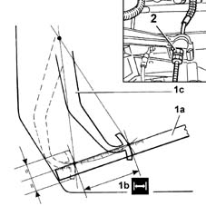

1820A14 clutch pedal - adjust travel
- Path
- Procedures > 18 CLUTCH > 1820 CLUTCH RELEASE CONTROLS > 1820A clutch release mechanical control > 1820A14 clutch pedal - adjust travel
- Kind
- repair procedure (removal / refitting; the operation number is the code)
- Applies to
- all engines; all production periods
- Interactive page
- https://sloeber94.github.io/elrnDB-fMltpl/en/#/2891524
Applies to: all engines; all production periods
Open the bonnet.
1048A10 AIR CLEANER FILTERING ELEMENT - REPLACE
Bed in the clutch pedal by pressing it fully 2 or 3 times.
1. Measure the travel (1b) of the pedal at rest (1c) using a metal ruler (1a).
If the value measured is different from the specified value, adjust the cable.
2. Tighten or slacken the adjustment nut and adjust the pedal travel to the specified value.
 | Measurement | Value | |
|---|---|---|---|
1b | Clutch pedal travel (mm) | 145 +\- 5 |

Applies to: all engines; all production periods
Bed in the clutch pedal by pressing it fully at least 3 or 4 times.
Check the clutch pedal travel again.
Topics linked from this page (1)
Topics that link to this page (18)
- E01 CLUTCH NOT RELEASING CORRECTLY
- E02 CLUTCH SLIPPING
- E03 CLUTCH VIBRATING OR JERKING
- E10 CLUTCH PEDAL HARDENING
- S25 CLUTCH NOISY'
- 0010K40 40,000km service coupon, emission control versions
- 0010K48 40,000km service for emission control versions with a/c
- 0010K80 80,000km service coupon - emission control versions
- 0010K85 80,000km service for emission control versions with a/c
- 0010M20 120,000km service coupon, emission control versions
- 0010M21 120000 km service coupon for emission control versions with air conditioner
- 0010M60 160,000km service coupon - emission control versions
- 0010M68 160,000km service for emission control versions with a/c
- 1020D38 flywheel side oil seal - replace
- 1024B10 engine flywheel - r + r for versions with manual gearbox
- 1810A20 clutch - r + r
- 1820A20 release cable - r + r
- 2110A10 manual gearbox and differential - r + r